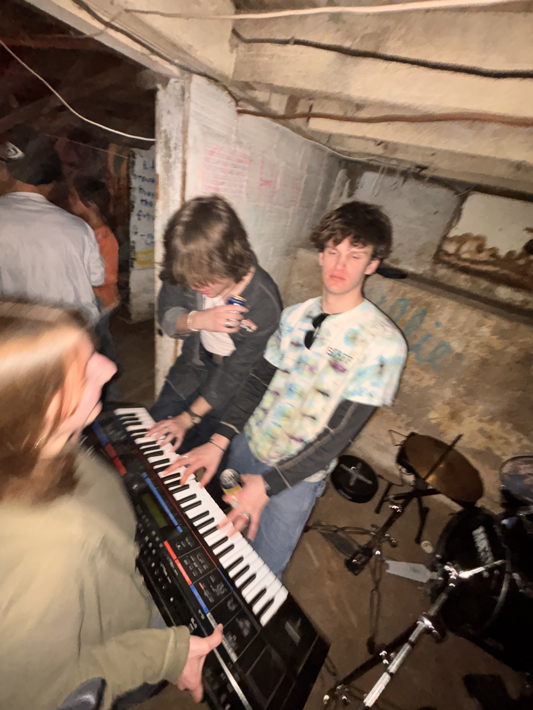
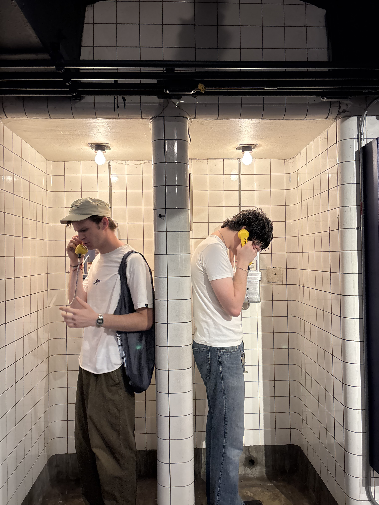
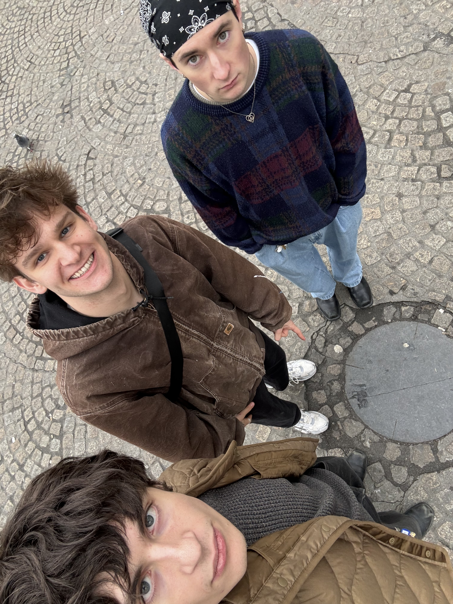
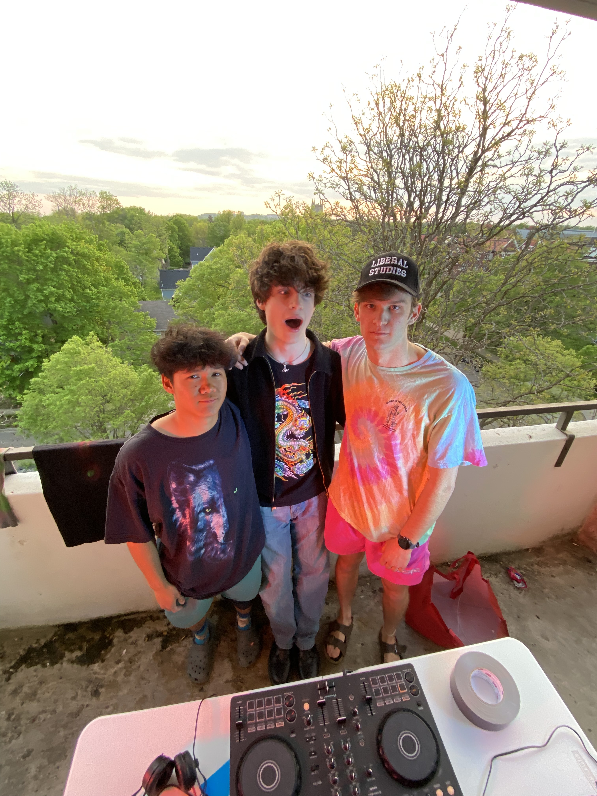
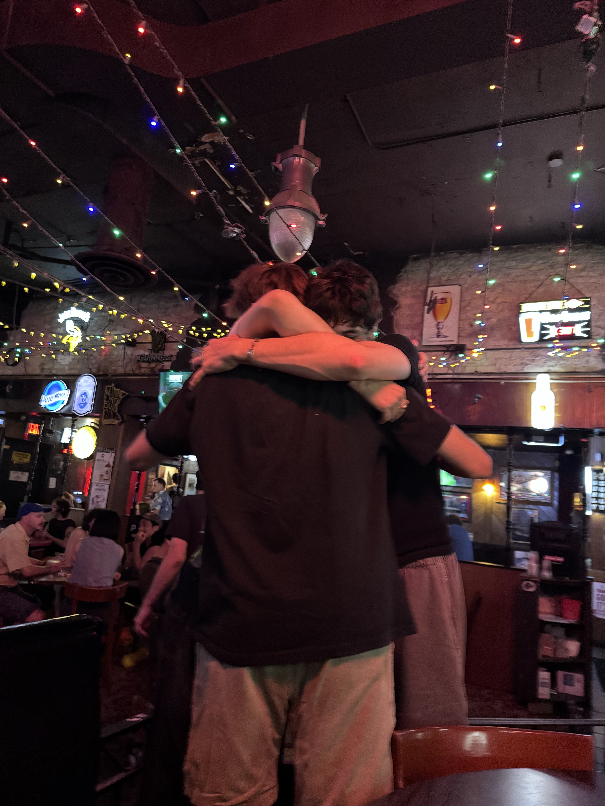

He asked me on a Tuesday, in a bar so dark the bartender worked by feel. Not a date. Never a date — he'd have made a bit of it and the bit would have been the end of it. He asked me to hold a microphone.
"One pass," he said. "Straight to tape. No undo."
He had spent nine weeks turning a year of a lake into sound — every temperature reading off a buoy that nobody visits, scaled to something a room could hear — and he refused to keep it in a computer, where it would be safe. He wanted it on the machine we'd bought broken in June. Thirty-five dollars. Eleven pounds of dead steel. He'd had it apart on his kitchen table for a month, and now it worked exactly once per night, if the room was cold and he asked it nicely.
"So what do I do," I said.
He took his glasses off, which he only ever needs at night, and cleaned them on his shirt, and put them back on, and looked at me through them like the prescription had changed.
"Somewhere in the middle," he said, "the light goes green. You say something true. That's it. That's the whole part."
"True about what?"
"Nah," he said, "you're good," and turned to the bartender to ask about the jukebox, and that was how he ended conversations he was afraid of — he handed them to the nearest stranger. He is fearless in almost every direction. He will email a man in Denmark he has never met. He will not finish a sentence that costs him anything.

We worked eleven nights in a borrowed room above a laundromat, which meant heat coming up through the floor and the whole place smelling faintly of other people's clean clothes. He'd bike over with the reels in a pannier, hair flat with sweat, hat off, already talking. Then the door would close and he'd go quiet in that way he has, all the charm draining out of him and something older taking the controls, and for two hours he'd be nothing but hands.
I learned things about him in that room that six months of bars hadn't told me. That he counts under his breath. That when a take is going well he stops blinking. That he can hear a fault in a signal four seconds before it happens and puts his palm flat on the desk like he's calming an animal.
On the fourth night my timing was late and he reached over and put two fingers on the inside of my wrist to give me the tempo. He kept them there for eleven beats. I know it was eleven because I counted, and I counted because counting was the only thing standing between me and saying something unforgivable.
"There," he said. "Feel it?"
I said yes. I meant something else. He'd already moved.

The trouble was he was like that with everyone. I'd watch him at the function, working a room of forty, and every single person got the full beam — the head tilt, the follow-up question, the hand that comes out and lands on your arm for one second when you say something funny. He gave it away constantly and completely and it cost him nothing, and it meant I could never once be sure the room above the laundromat was different for him than any other room.
That's the tension, if you want it plainly. Not whether he wanted me. Whether I was a person to him or a very good acoustic.
I found out on the ninth night, and not from him.
Somebody at the bar downstairs congratulated me on his fellowship. Most of a year. Most of the continents. Islands he'd have to reach by boat, to sit with people who keep a whole percussion tradition in their hands and their memory and nothing else, and get it onto a drive before the last man who knows it dies.
I went back up the stairs and stood in the doorway until he looked round.
"So the tape's a goodbye," I said.
He didn't do a bit. That's how I knew. He set down what he was holding and put both hands on the desk and said, "It's not a goodbye, it's a—" and then he stopped, and the stopping was so much worse. He'd asked me to help him build the object of my own absence and hadn't been able to say the word year out loud in eleven nights.
"No worries," I said, which is his line, and I used it as a weapon, and he took it like one.
I biked home in the rain. He did not chase me, because he is thirty percent coward, and he texted at 2:40 a.m., and the text said: tomorrow. the room's cold enough.

Thirty-one minutes. That's how long a year of a lake takes, if you play it at the right speed.
He got the machine running on the second try. The reels went round. The drone came up out of the floor, cold at the start — January, the ice — and I stood two feet from him in the dark with a microphone in my hand and watched the little green light and understood that he had built me a room with an exit and was waiting to see whether I'd use it.
Neither of us moved for nineteen minutes. Spring somewhere in there, the pitch climbing. His sleeve was two inches from my arm and had been for eleven nights and he did not close it and he did not step away, and by minute twenty I had stopped being able to tell the difference between the sound in the room and the sound in my ears.
Then the light went green.
What I said was: "I'm going to be here."
What I meant was the other thing, and he knew, because his eyes closed for exactly one second — a man taking a hit — and then he reached over without looking and put his hand around my wrist, over the pulse, and left it there for the remaining nine minutes and thirty seconds of the summer.
The tape ran out. The room went so quiet it rang.
"Yeah," he said. "Okay." And that was all of it. That was the whole conversation, and it was, I want to be clear, the loudest thing that has ever been said to me.

He left on a Sunday with a bag, three power adapters, and a hat he does not need in that hemisphere.
He did not take the reel. He put it in my hands at the door, wrapped in a t-shirt, and said, "Hold this for me," and then, because sincerity is unsurvivable for him past four seconds, he said something absurd about customs officers and orchestras, and laughed, and reached out and touched my arm for one second, and went down the stairs.
So here's what he's coming back to.
Eleven pounds of dead steel on my kitchen table. One reel of tape, thirty-one minutes long, with a lake at the bottom of it and my voice somewhere in the middle at minute nineteen, saying the false version of the true thing.
I haven't played it. Not once. That's the arrangement, and it's a year long, and I'm keeping it.
Come home and we'll listen to the room.
